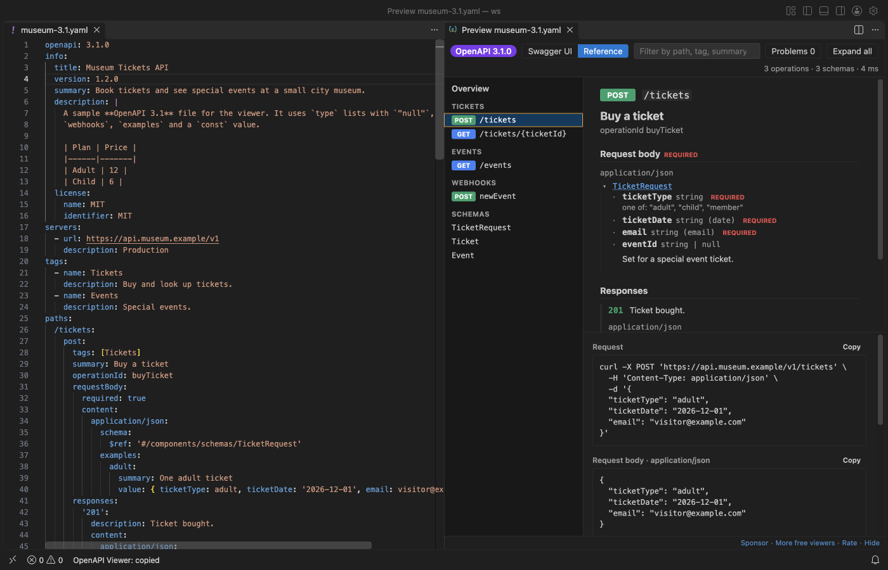

Open files in VS Code and Cursor / Code and APIs
Test an OpenAPI spec without running the server
Swagger Viewer & OpenAPI Viewer (now named Swagger Editor & OpenAPI Editing on the Marketplace) can start a mock server from your spec on 127.0.0.1, port 4010 by default. It answers each path and method in the spec with its example response, so you can call the API with curl, a front end or Try it out in the preview before the real server exists. The mock server is a Zovo Pro tool (USD 19 once) with 3 free tries. Preview, lint and Try it out against a server you run yourself are free.
Free, MIT license. Extension ID zovo.swagger-openapi-viewer, version 0.3.2. Needs VS Code 1.90.0 or newer.

Steps in VS Code
- Install Swagger Viewer & OpenAPI Viewer from the Marketplace, or press Ctrl+P (Cmd+P on macOS) and run
ext install zovo.swagger-openapi-viewer. - Open the spec, a
.yamlor.jsonfile withopenapi:orswagger:at the top. Give the responses you care about anexampleorexamples. Without one, the mock builds a value from the schema. - Right-click in the editor and pick OpenAPI, then Start mock server (127.0.0.1) (Pro). Or run "OpenAPI: Start mock server (127.0.0.1) (Pro)" from the Command Palette. The status bar shows Mock 127.0.0.1:4010.
- Call it, for example
curl http://127.0.0.1:4010/tickets. Each path and method returns the example of its lowest 2xx response. A server path such as/v1in the spec works with or without the prefix. - To get another response, send the header
Prefer: code=404or add?__code=404to the URL. A path that is not in the spec gives 404, and a method the path does not have gives 405. - To use the preview instead, add
- url: http://127.0.0.1:4010underservers, turn on the settingopenapiViewer.tryItOutand press Shift+Alt+P. In Swagger UI, pick that server, click Try it out, then Execute. VS Code asks once before it sends to a new address. - Click the Mock item in the status bar to stop or restart the server.
Where Zovo Pro saves time
The preview, lint with quick fixes, IntelliSense, convert, bundle and Try it out are free, with no sign-in. Try it out sends a request only after you turn it on and confirm, and only to the hosts on openapiViewer.tryItOutAllowedHosts, such as localhost and 127.0.0.1 by default. So with a server you run yourself, testing from the preview is free.
When a front end or a test needs the API before the backend is written, or the real server is down, the mock server answers from the spec alone. It serves the example responses on 127.0.0.1 with CORS open, so a local web page can call it, and it makes no outgoing requests. The other two Pro tools are a breaking-change report against a git ref or another file, and client code for one operation in 10 languages, such as curl, Python requests and JavaScript fetch.
With Start mock server (127.0.0.1) (Zovo Pro)
- Run "OpenAPI: Start mock server (127.0.0.1) (Pro)" from the Command Palette, or from the OpenAPI menu when you right-click in the spec.
- Click Copy URL in the message, or Show log to see each request with its status and time.
- Each start uses one free try, counted once the server listens. If the port is taken, the start fails and costs nothing. Change the port with
openapiViewer.mock.port.
Start mock server (127.0.0.1) works 3 times on your computer before it asks for a license, and a try counts only when you get a result. Opening a file shows no popup and no countdown.
Zovo Pro costs USD 19 once. It is not a subscription, and it turns on the Pro tools in every Zovo extension, not only Swagger Viewer & OpenAPI Viewer. After a card payment (Stripe) your license key shows on the next page. In VS Code, run "Zovo Pro: Enter Zovo Pro license key" from the Command Palette and paste it. The key is checked on your computer, with no network call. With GitHub Sponsors, pick the "$19 one time" tier, then run "Zovo Pro: I already paid: unlock with GitHub Sponsors" and sign in with the same GitHub account. With PayPal, send USD 19 with "Zovo Pro" in the note and the key comes by email within a day.
A team of 5: USD 59 once, by card or by PayPal. Every rule and every Pro tool is on the Zovo Pro page.
Steps in Cursor, Windsurf or VSCodium
- Open the Extensions view with Ctrl+Shift+X (Cmd+Shift+X on macOS).
- Search for
zovo.swagger-openapi-viewerand click Install. Cursor, Windsurf and VSCodium install from Open VSX, where it is published aszovo/swagger-openapi-viewer. - If your editor has no gallery, download the .vsix from the Open VSX page and run "Extensions: Install from VSIX...".
- Then use it the same way as in VS Code.
What Swagger Viewer & OpenAPI Viewer handles
- OpenAPI 3.1, 3.0 and Swagger 2.0, in YAML or JSON.
- Path parameters such as
/tickets/{ticketId}, and the path prefix of aserversURL or the 2.0basePath. - Examples from
example, namedexamplesor the schema, with formats such as date-time, email and uuid filled in. - Any response code in the spec, picked with a
Prefer: code=header or?__code=.
What it does not do
- The mock does not check the request against the schema and keeps no data. A POST does not change what a later GET returns.
- It serves the spec as it was when it started. After you edit the spec, restart it.
- It listens on 127.0.0.1 only, so other computers cannot reach it, and it stays off in Restricted Mode.
- Try it out in the preview does not send file uploads (multipart). The mock answers a request body over 1 MB with 413.
Other options
- Prism. A free, open source command-line mock server by Stoplight that serves an OpenAPI file, outside VS Code.
- Postman mock servers. Postman can make a mock server from an imported OpenAPI file. The mock runs in Postman's cloud.
Install counts and Open VSX status were checked on 12 November 2026. Descriptions in quotes are the extensions' own.
Questions
Is the mock server free?
It is a Zovo Pro tool with 3 free tries on your computer, and each start uses one try. Try it out against a server you run yourself is free.
Does the mock send anything to the internet?
No. It listens on 127.0.0.1 only and never makes an outgoing request.
Why does Try it out not reach the mock?
Swagger UI sends to the servers listed in the spec. Add http://127.0.0.1:4010 under servers and pick it, and turn on openapiViewer.tryItOut.
Does it work in Cursor or Windsurf?
Yes. Cursor, Windsurf and VSCodium install extensions from Open VSX. Search for the extension in their Extensions view and install it there.
More about Swagger Viewer & OpenAPI Viewer
Read the Swagger Viewer & OpenAPI Viewer page for every feature and setting, or the source code on GitHub.
Related guides
- Preview a Swagger or OpenAPI file in VS Code
- Open a SARIF file in VS Code
- Preview an HTML file with its CSS and images in VS Code
- Test a regex in VS Code
Zovo Pro and support
Zovo Pro: USD 19 once, every Zovo viewer. It turns on the Pro tools in this extension and in the other Zovo extensions you use. The free features stay free.
After a card payment your license key shows on the next page. Paste it with the command "Zovo Pro: Enter a key".
You can also support the work with no Pro:
Need your format supported?
Open a format request with a sample file, and I reply there whether it can be done. For USD 299 once, through this GitHub Sponsors tier, I add your file format or a missing feature to this extension, with tests, within 7 days.